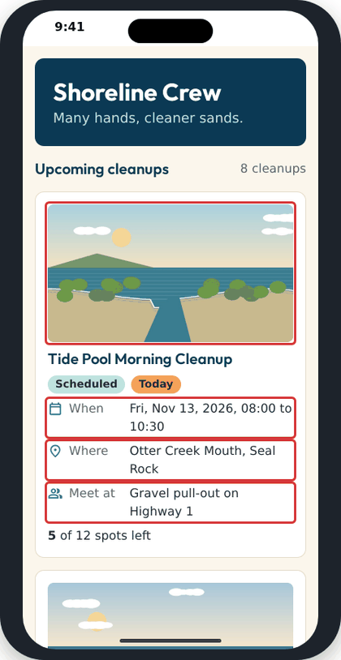

🖼️ Lesson 2.3: Images, Icons, Fonts and Safe Areas
Shoreline Crew's cards are well organized now, but they still look like a draft: plain text in the phone's default font, no pictures of the beaches, and nothing to stop the screen from sliding under the clock and the camera. In this lesson the app starts to look like an app. You show each beach with expo-image, add icons that look native on both iPhone and Android, load the crew's heading font before the first screen appears, keep every screen clear of the notch and the home indicator, and give Shoreline Crew its own icon and splash screen.
🎯 Learning Objectives
By the end of this lesson, you will be able to:
- Show local and remote pictures with expo-image, give a picture from a server a size with
aspectRatio, choose acontentFit, and describe it for screen readers - Use expo-symbols for icons that are SF Symbols on an iPhone and Material Symbols on Android and the web, with type-checked names
- Load a custom font with
useFontswhile the splash screen waits, and pick font weights by family name - Explain safe areas and insets, and keep content clear of the status bar, the notch and the home indicator with react-native-safe-area-context
- Replace the template's app icon, adaptive icon layers, splash screen and favicon, and say which ones you can see in Expo Go and which only in a build
📦 Code for this lesson
Starting code: lesson-06-start.zip · Finished code: lesson-06-end.zip. Each folder has a README with the commands to run it. You need the finished code in Step 6 either way: it holds Shoreline Crew's icon and splash images.
In This Lesson
👋 Welcome: From Draft to App
On the web, the four topics of this lesson are almost free. You write <img src alt> and the browser works out the size. You drop an SVG icon into the page. You add a font with one @font-face rule and the browser swaps it in when it arrives. And the browser window never has a camera cutting into it.
A phone app has to do each of these on purpose. Pictures from a server have no size until they arrive, so you decide their size up front. Icons should match the platform, so an iPhone shows Apple's symbols and an Android phone shows Google's. A custom font has to be loaded before the first screen draws, or the text jumps from one font to another in front of the volunteer. And the screen is a rounded rectangle with a camera in it, a clock and battery at the top, and a gesture bar at the bottom, all drawn on top of your app.
- Why it matters for your work: these are the details reviewers and clients notice first. An app with blurry or jumping pictures, mismatched icons and a title hidden behind the clock looks unfinished, however good its code is.
- Why it matters for the volunteers: a picture of the beach tells a newcomer where they are going faster than a name does, and a title they can actually read, not half-covered by the camera, is the least they should expect.
✅ Four small skills, not one big one
This lesson covers four topics, and each one is small on its own: a few props, one hook, one component. If one of them does not click right away, keep going and come back to it; the project brings them together one step at a time, and the web preview shows you each change as you save.
🖼️ Pictures with expo-image
React Native has a built-in Image component, and you will see it in many tutorials. Expo's template also ships expo-image, a faster replacement with caching, smooth transitions and the same API on Android, iOS and the web. Shoreline Crew uses expo-image for every picture. The props you will use most:
| Prop | What it does | Web equivalent |
|---|---|---|
source | A URL string, { uri }, or a require()d file that ships inside the app | src |
style | The size and shape: width, height, aspectRatio, borderRadius | CSS on the <img> |
contentFit | How the picture fills its box: 'cover' (default: fill it, crop the rest), 'contain' (show it all), 'fill', 'none', 'scale-down' | object-fit |
transition | Fade the picture in over this many milliseconds when it arrives | a CSS transition |
accessibilityLabel | What a screen reader says; on the web it becomes the alt attribute | alt |
cachePolicy | Where downloaded pictures are kept: 'disk' by default, so a picture seen once shows again without the network | the browser cache |
The rule: a picture from a server needs a size
A browser downloads a picture and then makes room for it. A phone lays the screen out before the picture arrives, and expo-image never sizes itself from the file. The course measured both components in the web preview, each placed in a 358-wide column with no size in their styles:
| Picture | expo-image | React Native Image |
|---|---|---|
| From the API, no size | 358 wide, 0 tall: invisible | 358 wide, 0 tall: invisible |
A require()d file, no size | 0 by 0: invisible | 400 by 400, the file's own size |
From the API, aspectRatio: 1200 / 675 | 358 by 201 | (same idea) |
No error, no warning: just nothing on the screen. So every expo-image gets a size. You have two ways to give it one:
- Fixed:
width: 96, height: 96for a logo or a thumbnail. - Flexible: let the parent decide the width (a column stretches its children, as Lesson 2.2 showed) and set
aspectRatio, the width divided by the height. The height follows. Shoreline Crew's site pictures are 1200 by 675, which is 16:9, and the API sends those numbers with each site, so the card can usesite.image.width / site.image.heightinstead of guessing.
Both kinds of source in one example (this is not a file in the project):
import { Image } from 'expo-image';
import { StyleSheet } from 'react-native';
// A picture that ships inside the app: require() it, so the bundler packs the file
export function Logo() {
return (
<Image
source={require('@/assets/images/splash-icon.png')}
accessibilityLabel="Shoreline Crew"
style={styles.logo}
/>
);
}
// A picture from a server: a URL string (or { uri }), and a size you choose
export function SitePicture({ url, alt }: { url: string; alt: string }) {
return (
<Image source={url} accessibilityLabel={alt} style={styles.picture} contentFit="cover" />
);
}
const styles = StyleSheet.create({
logo: { width: 96, height: 96 },
// As wide as the parent allows, and as tall as 16:9 makes it
picture: { width: '100%', aspectRatio: 16 / 9 },
});require('@/assets/images/splash-icon.png')is how you refer to a file inside the project. Metro, the bundler from Lesson 1.2, sees therequireand packs the file into the app; the path must be a plain string, never built at runtime. The@/assets/…alias comes from the template'stsconfig.json.- A URL is downloaded when the picture is first shown, then cached on the device.
💡 Mental model: the noticeboard at the meeting point
Picture the crew's noticeboard at the beach. The morning's photo is still on its way from town. If nobody pins up a frame for it, everything else on the board gets arranged without it, and when the photo arrives there is no space: it ends up nowhere. If you pin up an empty frame of the right shape first, the board is laid out around it, and the photo slides in when it comes. aspectRatio is that empty frame. The Seafoam background you give the picture is the color of the frame while it waits.
Where Shoreline Crew's pictures come from
The shoreline-api serves one illustration for each of its six beaches, and each site carries its picture's details: image.url, image.alt (a description written for screen readers), image.width and image.height. The URL is absolute and built from the address you asked: request the sites from http://localhost:4000 and the URLs start with http://localhost:4000/images/sites/; request them from your computer's network address (Lesson 5.1) and the URLs use that address. That is why the phone can show the same pictures later without any change to your code.
One detail cost the course a failed accessibility check: expo-image's documentation lists alt as another name for accessibilityLabel, but in the web preview the picture rendered with no alt attribute at all when only alt was set (expo-image 58 passes alt on to the native components but not to the web's loaded <img>). With accessibilityLabel, the web preview's <img> got the right alt. Use accessibilityLabel, which works everywhere.
📱 On your phone
Until Lesson 5.1, Expo Go on your phone cannot reach the API (it shows "Could not reach the server"), so it has no pictures to show yet; the web preview does. Once the phone has data, the pictures should fade in over 0.2 seconds the first time and appear at once after that, because they come from the phone's cache. Screen readers (VoiceOver on an iPhone, TalkBack on Android) should read each picture's description; Lesson 8.1 tries that properly.
🔣 Icons with expo-symbols
On the web you might use an icon font or inline SVGs. On a phone, the platforms each have their own icon set that people already know: Apple's SF Symbols on iPhones, Google's Material Symbols on Android. The SDK 58 template ships expo-symbols, whose SymbolView draws an SF Symbol on iOS and a Material Symbol on Android and the web. The catch: the two sets use different names, so you give one name per platform:
import { SymbolView } from 'expo-symbols';
export function CalendarIcon() {
return <SymbolView name={{ ios: 'calendar', android: 'calendar_today', web: 'calendar_today' }} size={20} />;
}You can also write name="calendar", a plain SF Symbol name, and TypeScript accepts it. The course measured what that does in the web preview: the icon's box is not drawn at all, because a plain name only works on iOS. expo-symbols' source says the same thing for Android: with no name for the platform, it draws the fallback prop, and without one, nothing. So always give the object with all three names.
Both name sets are type-checked. A misspelled SF Symbol or Material Symbol is a tsc error with a "Did you mean" suggestion (see Common Mistakes), which is a big help when the Material set has over four thousand names. To find names, browse Apple's SF Symbols app (Mac) or the SF Symbols list in the Expo docs, and Google's Material Symbols site (use the name with underscores, like calendar_today).
Shoreline Crew keeps its icons in one small component, Icon, with a table that names each icon by its job (date, place, meet), exactly like the color roles from Lesson 2.1. The screens never see an SF Symbol name; if the crew wants a different calendar icon, one line changes.
- Color and size:
tintColorandsize(default 24). The icon is a squaresizebysizebox. - Accessibility: an icon next to a word ("When", "Where") is decoration: a screen reader saying "calendar, When" adds nothing. Shoreline Crew's
Iconhides itself from screen readers. An icon that stands alone, such as a button with only an icon, needs anaccessibilityLabelon the button instead (Lesson 2.4). - Loading: on Android and the web, expo-symbols draws Material Symbols with a font that it loads itself the first time an icon appears.
🧩 Version note: expo-symbols, not @expo/vector-icons
Most React Native tutorials, and older Expo templates, use @expo/vector-icons (<Ionicons name="calendar" />): one icon font that looks the same on every platform. It still works (npx expo install @expo/vector-icons), but it is no longer in the template. This course follows the SDK 58 template: expo-symbols, so each platform gets its own native-looking icons.
🔤 A Custom Font, Loaded Before the First Screen
Every phone has its own system font (San Francisco on iPhones, Roboto on most Android phones), and Shoreline Crew keeps it for body text: it is designed for small screens, and it follows the volunteer's text-size settings. Headings get the crew's brand font, Outfit, the same as the HQ web app.
On the web, the HQ loaded Outfit with a stylesheet and the browser swapped it in when it arrived. A phone app has no stylesheet, so the font files ship inside the app and are registered with the phone when the app starts. The Expo way, in three parts:
- The files:
@expo-google-fonts/outfitcontains Outfit's nine weights as.ttffiles, one folder each. Import only the weights you use, from their own paths (@expo-google-fonts/outfit/600SemiBold), so the other seven never enter the bundle. - The loading:
useFontsfrom expo-font (already in the template) takes a map of names to files, registers them, and returns[loaded, error]. The keys of the map become thefontFamilynames you use in styles. - The waiting: until the fonts are registered, headings would draw in the system font and then jump to Outfit. So the app keeps the splash screen (the picture shown while an app starts) up a little longer:
SplashScreen.preventAutoHideAsync()when the app starts,SplashScreen.hideAsync()once the fonts are ready.
If loading fails, Shoreline Crew carries on with the system font. A volunteer with a slightly plainer heading is fine; a volunteer stuck on a splash screen is not.
One family per weight
In CSS, one font-family: Outfit covers every weight and font-weight: 600 picks one. With a font loaded this way, each weight is its own family: 'Outfit_600SemiBold', 'Outfit_700Bold'. You choose the weight by the family name and leave fontWeight out:
import { StyleSheet, Text } from 'react-native';
// With a custom font, pick the weight by its family name...
export function Right() {
return <Text style={styles.right}>Upcoming cleanups</Text>;
}
// ...not with fontWeight: there is no bold "Outfit_600SemiBold" for the phone to find
export function Risky() {
return <Text style={styles.risky}>Upcoming cleanups</Text>;
}
const styles = StyleSheet.create({
right: { fontFamily: 'Outfit_700Bold', fontSize: 20 },
risky: { fontFamily: 'Outfit_600SemiBold', fontWeight: 'bold', fontSize: 20 },
});In the web preview, the risky version can still look fine, because a browser fakes a bold version of a font that has none. React Native's documentation for fontFamily does not promise that on phones: depending on the platform, you may get a fake bold, the plain semibold, or the system font. Do not depend on it; pick the weight by name.
A wrong name fails silently
A misspelled fontFamily is not an error anywhere. In the web preview, 'Outfit_700bold' (lowercase b) quietly drew the browser's default font, with nothing in the console, and React Native's iOS code (RCTFont.mm) only logs an information message, "Unrecognized font family", and uses the system font. So Shoreline Crew keeps the family names in one typed file, src/theme/typography.ts, where a typo becomes a tsc error, and AppText is the only component that uses them.
📱 On your phone
In Expo Go, the headings ("Shoreline Crew", "Upcoming cleanups", the cleanup titles) should appear in Outfit straight away, with no jump from another font. When you change the font map and save, Fast Refresh may not reload the fonts; press r in Metro's terminal to reload the app. There is a second way to add fonts, the expo-font config plugin, which builds the files into the app so nothing loads at startup; it works in development builds, not in Expo Go, so the course uses useFonts until Module 9.
📐 Safe Areas: Notches, Status Bars and Home Indicators
A browser draws your page inside a rectangle that the browser itself keeps clear of everything else. A phone app is drawn on the whole screen, and the system draws on top of it: the status bar (clock, signal, battery) at the top, a camera cutout (a notch, a hole or Apple's Dynamic Island) inside the status bar, rounded corners, and at the bottom a home indicator (iPhone) or a gesture or button bar (Android). The part of the screen that none of these cover is the safe area. The distances from each edge of the screen to the safe area are the insets.
The numbers depend on the phone and on how it is held: an iPhone with a notch or a Dynamic Island has roughly 44 to 62 points at the top and 34 at the bottom in portrait, an older iPhone with a home button about 20 at the top and 0 at the bottom, and Android phones vary by maker and by whether gesture navigation is on. In landscape, the sides get insets too. Never hard-code them: ask the phone.
react-native-safe-area-context
The template includes react-native-safe-area-context, and Expo Router already wraps your app in its SafeAreaProvider, so you can ask for the insets anywhere. It gives you two tools:
useSafeAreaInsets()returns{ top, right, bottom, left }in density-independent pixels. You add them to your own padding. Shoreline Crew'sScreenuses this, because it needs to treat the top and the bottom differently.<SafeAreaView edges={[…]}>is aViewthat adds the insets as padding on the edges you list. Handy for a simple screen:
import type { ReactNode } from 'react';
import { StyleSheet } from 'react-native';
import { SafeAreaView } from 'react-native-safe-area-context';
// The component way: a View with the insets as padding, on the edges you list
export function SafeFrame({ children }: { children: ReactNode }) {
return (
<SafeAreaView edges={['top', 'bottom']} style={styles.frame}>
{children}
</SafeAreaView>
);
}
const styles = StyleSheet.create({
frame: { flex: 1, backgroundColor: '#fbf6ec' },
});Import SafeAreaView from react-native-safe-area-context, never from react-native: React Native's own version only ever worked on iOS, and in React Native 0.88 it prints a deprecation warning the first time you use it (see Common Mistakes).
Who covers which edge
Not every screen should add every inset. The navigator's header bar already sits below the status bar and pads itself, and a tab bar (Lesson 4.2) pads itself above the home indicator. If your screen added the same inset again, you would get an empty band. So the rule is: a screen keeps clear of the edges that nothing else covers. The Cleanups screen hides the header bar in this lesson (its banner already names the app), so it touches all four edges. That is why Shoreline Crew's Screen gets an edges prop: all four by default, fewer for a screen under a header or above a tab bar.
Scrolling screens: the top and the bottom are different
- Top: the inset goes on the scroll view's frame (
style), so the scrolling content stops below the status bar instead of sliding under the clock. - Bottom: the inset goes inside the scrolling content (
contentContainerStyle). The cards may pass behind the home indicator while you scroll, which looks natural, but when you reach the end, the last card stops above it. - A bar pinned to the bottom (Lesson 2.2's
WithBottomBarpattern, such as a "Sign up" button under a detail screen) does not scroll, so the bar itself addsinsets.bottomto itspaddingBottom: its background reaches the bottom of the glass and its button stays above the home indicator.
💡 Mental model: the tide line
The safe area is the dry sand. The crew's tarp (your background color) can stretch down into the wet sand and nobody minds, but the clipboards and the bags (your content) stay above the tide line, or they get soaked. Each phone has its own tide line, and it moves when you turn the phone sideways. useSafeAreaInsets() is checking the tide chart before you set things down.
The status bar is part of this too. Its clock and icons are drawn in either a dark or a light color, and on a light Sand page they must be dark. The template's expo-status-bar sets that: <StatusBar style="dark" />. Shoreline Crew is light-only until Lesson 2.5, so it says "dark" explicitly; with the default, a phone in dark mode would draw light icons on Sand.
The web preview cannot show any of this: a desktop browser has no notch, so its insets are all 0. The course drew the Cleanups screen inside a phone frame with the insets simulated (a test page that hands Screen the numbers of a phone with a notch), first as a phone with no safe-area handling would draw it, then with Shoreline Crew's Screen:


Screen's insets (simulated as 47 at the top and 34 at the bottom): the frame starts below the status bar. On a real phone the numbers come from the device; the web preview's insets are 0.📱 On your phone
This is where Expo Go shines. Open the app after Step 2 of the project: the banner should start just below the clock and the camera, with the Sand page color behind the status bar, and the clock in dark text. Scroll to the end: the last card should stop above the home indicator or gesture bar. Turn the phone sideways if your phone allows it: on a phone with a notch, the side with the camera gets an inset too. Android apps built with recent Expo SDKs draw "edge to edge", behind the status bar and the navigation bar, so the insets matter there as much as on an iPhone.
🏝️ The App Icon and the Splash Screen
The template still has Expo's placeholder icon and a blue splash screen. A volunteer should see Shoreline Crew's sunrise over two waves instead. These are not React components: they are files and settings in app.json that the build tools turn into the native icon and splash screen.
File (assets/images/) | Size | Used for | app.json |
|---|---|---|---|
icon.png | 1024 x 1024, no transparency | iPhone home screen (iOS rounds the corners itself) and the default for everything else | icon |
android-icon-foreground.png | 512 x 512, transparent | Android's adaptive icon: the logo, inside the central safe zone | android.adaptiveIcon.foregroundImage |
android-icon-background.png | 512 x 512 | The layer behind it (Deep Tide); Android cuts both into a circle, a squircle or a square, depending on the phone | android.adaptiveIcon.backgroundImage + backgroundColor |
android-icon-monochrome.png | 432 x 432, white on transparent | Themed icons on Android 13 and later, tinted to match the wallpaper | android.adaptiveIcon.monochromeImage |
splash-icon.png | 400 x 400, transparent | The logo in the middle of the splash screen | the expo-splash-screen plugin's image, imageWidth, backgroundColor |
favicon.png | 48 x 48 | The browser tab of the web version | web.favicon |
The course made Shoreline Crew's six files from the crew's logo with the same names and sizes as the template's, so they drop straight in. Two more settings change: name, the name shown under the icon, becomes "Shoreline Crew" (the slug, the project's id on Expo's servers, stays shoreline-crew), and the template's iOS-only icon setting is removed. That setting points to assets/expo.icon, a layered icon made with Apple's Icon Composer for the newest iOS look; without it, iOS uses icon.png. Lesson 9.1 comes back to icons for the stores.
⚠️ Where you can see them
The icon, the adaptive icon and the native splash screen are built into the app. Expo Go is its own app with its own icon, so you will not see Shoreline Crew's icon on your home screen until you make a development build in Module 9, and Expo's documentation recommends a development build for testing the splash screen too. What you can check today: npx expo-doctor validates app.json, the web preview's browser tab shows the new favicon (in the course's web export, favicon.ico was built from it), and the files are ready for the day you build.
⚠️ Common Mistakes
⚠️ A picture with no size
No error, no warning, and nothing on the screen: an expo-image without a width and height, or a width from its parent plus an aspectRatio, is 0 tall (measured above). If a picture is missing, check its size before you check its URL.
⚠️ A plain SF Symbol name
date: 'calendar', in the icons table type-checks without a single error, because name also accepts a plain SF Symbol. It works on an iPhone, and on Android and in the web preview the icon is simply not there. Give all three names.
⚠️ A misspelled icon name
This one is caught. With android: 'calender_today' in Icon.tsx, TypeScript lists a few of the 4,000+ Material names and then suggests the right one:
Expected output (shortened)
src/components/Icon.tsx:9:28 - error TS2820: Type '"calender_today"' is not assignable to type '"function" | "draft" | "email" | "phone" | "title" | "description" | "upcoming" | "terrain" | "accessible" | "image" | "height" | "error" | "message" | "join" | "shift" | "sort" | ... 4039 more ... | undefined'. Did you mean '"calendar_today"'?
9 date: { ios: 'calendar', android: 'calender_today', web: 'calendar_today' },
~~~~~~~
...
Found 2 errors in the same file, starting at: src/components/Icon.tsx:9Read the end of the first line: Did you mean '"calendar_today"'?. The second error is the same mistake seen from where Icon uses the table; fix the first and both go.
⚠️ A misspelled font family
Silent on every platform (the system font appears instead), which is why typography.ts types the names. With title: 'Outfit_700bold':
Expected output
src/theme/typography.ts:10:3 - error TS2820: Type '"Outfit_700bold"' is not assignable to type '"Outfit_600SemiBold" | "Outfit_700Bold"'. Did you mean '"Outfit_700Bold"'?
10 title: 'Outfit_700bold',
~~~~~
Found 1 error in src/theme/typography.ts:10⚠️ fontWeight with a custom font
fontFamily: 'Outfit_600SemiBold', fontWeight: 'bold' looks fine in the web preview (the browser fakes it) and may not on a phone. Pick the weight by family name, and add a weight to fontFiles when you need one.
⚠️ SafeAreaView from react-native
Old tutorials import it from react-native. In React Native 0.88 that version is deprecated, and React Native's source shows the warning it prints the first time you use it: "SafeAreaView has been deprecated and will be removed in a future release. Please use 'react-native-safe-area-context' instead." It also never handled Android. Import it from react-native-safe-area-context, or use the hook.
⚠️ Adding the same inset twice
A screen under a header bar that also adds insets.top shows an empty band the height of the status bar under the header. Leave out the edges a header or a tab bar already covers (edges={['bottom', 'left', 'right']} under a header).
⚠️ Expecting Expo Go to show your icon
You changed app.json, reloaded, and the icon on your phone is still Expo Go's. Nothing is wrong: the icon belongs to the app that is installed, and that is Expo Go. Your own icon arrives with your own build (Module 9).
🛠️ Project: Shoreline Crew Gets Its Look
You load Outfit behind the splash screen, teach Screen about safe areas, build an Icon component, put each beach's picture on its card, add icons and a "Where" row to the details, and replace the template's icon and splash screen. Keep shoreline-api running in its own terminal (node server.ts) and Metro in another (npx expo start, then w for the web preview). Work in the shoreline-crew folder.
Step 1: Install Outfit and load it before the first screen (15 min)
- Stop Metro (Ctrl+C) and install the font package with Expo's installer, the way Lesson 1.2 said to add packages:
npx expo install @expo-google-fonts/outfitExpected output
› Installing 1 other package using npm > npm install --save @expo-google-fonts/outfit added 1 package, and audited 794 packages in 2s 164 packages are looking for funding run `npm fund` for details 8 moderate severity vulnerabilities To address issues that do not require attention, run: npm audit fix To address all issues (including breaking changes), run: npm audit fix --force Run `npm audit` for details."1 other package" means Expo has no SDK-specific version for this package, so it lets npm pick the latest. The vulnerability lines are the same moderate warnings you have seen since Lesson 1.2; do not run
npm audit fix --force. Start Metro again (npx expo start). - Create
src/theme/typography.ts:shoreline-crew/src/theme/typography.tsimport { Outfit_600SemiBold } from '@expo-google-fonts/outfit/600SemiBold'; import { Outfit_700Bold } from '@expo-google-fonts/outfit/700Bold'; // The font files the app loads before its first screen. Each key becomes a fontFamily name. export const fontFiles = { Outfit_600SemiBold, Outfit_700Bold }; // Headings use Outfit; everything else stays in the phone's own font. // A custom font has one family per weight: the weight is in the name, not in fontWeight. export const fonts = { title: 'Outfit_700Bold', heading: 'Outfit_600SemiBold', } as const satisfies Record<string, keyof typeof fontFiles>;- Each weight comes from its own path, so only these two
.ttffiles go into the app. The imported value is not the font itself but a reference to the file that Metro packs, the same thingrequire()gives you for a picture. fontFilesuses the short-hand{ Outfit_600SemiBold, Outfit_700Bold }, so each key is the import's name, and that name becomes thefontFamily.as const satisfies Record<string, keyof typeof fontFiles>keeps the exact names (as const, from Lesson 2.1) and checks that every value is one offontFiles' keys. A typo is atscerror instead of a silently wrong font.
- Each weight comes from its own path, so only these two
- Replace
src/app/_layout.tsx. Besides the fonts, it sets the status bar and hides the header bar on the Cleanups screen (Step 2 explains both):shoreline-crew/src/app/_layout.tsximport { useFonts } from 'expo-font'; import { Stack } from 'expo-router'; import * as SplashScreen from 'expo-splash-screen'; import { StatusBar } from 'expo-status-bar'; import { useEffect } from 'react'; import { fontFiles } from '@/theme/typography'; // Keep the splash screen up while the fonts load (runs once, when the app starts) SplashScreen.preventAutoHideAsync(); export default function RootLayout() { const [fontsLoaded, fontError] = useFonts(fontFiles); // If a font fails to load, carry on with the system font rather than a splash screen forever const ready = fontsLoaded || fontError !== null; useEffect(() => { if (ready) { SplashScreen.hideAsync(); } }, [ready]); if (!ready) { return null; // the splash screen is still showing } return ( <> {/* Dark clock and battery icons on the light Sand page (Lesson 2.5 follows the theme) */} <StatusBar style="dark" /> <Stack> {/* The Cleanups screen draws its own banner, so it needs no header bar */} <Stack.Screen name="index" options={{ headerShown: false }} /> </Stack> </> ); }SplashScreen.preventAutoHideAsync()is called at the top level of the file, outside the component, so it runs once when the app starts, before anything draws. Calling it inside the component would be too late on some renders.useFonts(fontFiles)returns[loaded, error];readyis true in either case. Until then the layout returnsnull, which is fine because the splash screen covers everything.- The effect hides the splash screen once, when
readyturns true. - The layout now returns a fragment (
<>…</>) with theStatusBarand theStack.<Stack.Screen name="index" options={{ headerShown: false }} />configures the routeindexfrom its parent; Lesson 4.1 shows the other options.
- Use the fonts in
src/components/AppText.tsx. Thetitleandheadingvariants get afontFamilyand lose theirfontWeight:shoreline-crew/src/components/AppText.tsximport { colors } from '@/theme/colors'; +import { fonts } from '@/theme/typography'; // ... title: { + fontFamily: fonts.title, fontSize: 32, lineHeight: 40, - fontWeight: 'bold', }, heading: { + fontFamily: fonts.heading, color: colors.heading, fontSize: 20, lineHeight: 28, - fontWeight: '600', }, - Save and look at the web preview: "Shoreline Crew", "Upcoming cleanups" and every cleanup title are now in Outfit, rounder and more geometric than the system font. The Badge labels and body text keep the system font. The header bar with "index" is gone too.
Step 2: Safe areas in Screen (15 min)
Now that the Cleanups screen has no header bar, its banner would start under the status bar on a phone. Replace src/components/Screen.tsx:
import type { ReactNode } from 'react';
import { ScrollView, StyleSheet, View } from 'react-native';
import { type Edge, useSafeAreaInsets } from 'react-native-safe-area-context';
import { colors } from '@/theme/colors';
import { spacing } from '@/theme/spacing';
type ScreenProps = {
children: ReactNode;
// true: the content scrolls when it is taller than the screen
scroll?: boolean;
// The edges of the phone this screen touches. Leave out an edge that a header or a tab bar covers.
edges?: readonly Edge[];
};
const allEdges: readonly Edge[] = ['top', 'right', 'bottom', 'left'];
// Every screen starts here: the page color from edge to edge, the same padding and gaps,
// and content kept clear of the status bar, the notch and the home indicator.
export function Screen({ children, scroll = false, edges = allEdges }: ScreenProps) {
const insets = useSafeAreaInsets();
// How much of each edge the phone covers (0 where it covers nothing, or the edge is left out)
const clear = (edge: Edge) => (edges.includes(edge) ? insets[edge] : 0);
// The frame stays out from under the status bar and the notch (and the sides in landscape)...
const frame = { paddingTop: clear('top'), paddingRight: clear('right'), paddingLeft: clear('left') };
// ...and the content ends above the home indicator, so the last card can scroll clear of it
const end = { paddingBottom: spacing.md + clear('bottom') };
if (scroll) {
return (
<ScrollView style={[styles.screen, frame]} contentContainerStyle={[styles.content, end]}>
{children}
</ScrollView>
);
}
return (
<View style={[styles.screen, frame]}>
<View style={[styles.fill, styles.content, end]}>{children}</View>
</View>
);
}
const styles = StyleSheet.create({
screen: {
flex: 1, // fill the space the navigator gives the screen, not just the content's height
backgroundColor: colors.page,
},
fill: {
flex: 1,
},
content: {
gap: spacing.md,
padding: spacing.md,
},
});edgesis typed with the library's ownEdgetype ('top' | 'right' | 'bottom' | 'left'), soedges={['bottom']}is checked. It defaults to all four, kept in a constant outside the component so it is not a new array on every render.clear(edge)answers "how much does the phone cover on this edge, if this screen touches it?": the inset, or 0.framepads the top and the sides of the screen itself. The background (styles.screen) still fills the whole screen, so the Sand color shows behind the status bar.endadds the bottom inset to the content's own bottom padding. In the scrolling version it is part ofcontentContainerStyle, so cards scroll behind the home indicator and the last one stops above it.- The non-scrolling version needs two
Views for the same reason: the outer one is the frame, the inner one holds the padded content. PuttingpaddingTopandpaddingon one view would not add them up: the more specificpaddingTopsimply wins.
The Cleanups screen already uses <Screen scroll> with no edges, so it gets all four. Save: the web preview looks the same, because its insets are 0. On your phone in Expo Go, the banner now starts below the clock and the camera (see the simulated pictures).
Step 3: An Icon component (10 min)
- Add two color roles to
src/theme/colors.ts: one for icons, one for the space a picture takes while it loads:shoreline-crew/src/theme/colors.tsonBannerAccent: brand.seafoam, + icon: brand.seaTeal, + picture: brand.seafoam, // behind a picture while it loads } as const;Sea Teal on white is about 5.6:1, comfortably above the 3:1 that WCAG asks of meaningful graphics.
- Create
src/components/Icon.tsx:shoreline-crew/src/components/Icon.tsximport { SymbolView, type SymbolViewProps } from 'expo-symbols'; import type { ColorValue } from 'react-native'; import { colors } from '@/theme/colors'; // Every icon the app uses, named by its job: an SF Symbol for iOS, a Material Symbol for // Android and the web. A plain SF Symbol name alone draws nothing on Android or the web. const icons = { date: { ios: 'calendar', android: 'calendar_today', web: 'calendar_today' }, place: { ios: 'mappin.and.ellipse', android: 'location_on', web: 'location_on' }, meet: { ios: 'person.2', android: 'group', web: 'group' }, } satisfies Record<string, SymbolViewProps['name']>; export type IconName = keyof typeof icons; type IconProps = { name: IconName; size?: number; color?: ColorValue; }; // A decorative icon: the words beside it say what it means, so screen readers skip it export function Icon({ name, size = 20, color = colors.icon }: IconProps) { return ( <SymbolView name={icons[name]} size={size} tintColor={color} accessibilityElementsHidden importantForAccessibility="no-hide-descendants" /> ); }satisfies Record<string, SymbolViewProps['name']>checks every entry against expo-symbols' own type forname(both name sets), while keeping the table's exact keys.SymbolViewProps['name']is an indexed access type: "the type of thenameprop".IconNameis'date' | 'place' | 'meet', taken from the table, so adding an icon is one new line and every caller is checked.accessibilityElementsHidden(iOS) andimportantForAccessibility="no-hide-descendants"(Android) hide the icon from screen readers; on the web, expo-symbols already marks its glypharia-hidden.
Step 4: Beach pictures on the cards (20 min)
- Add a radius for pictures to
src/theme/spacing.ts:shoreline-crew/src/theme/spacing.tsexport const radius = { card: 12, + picture: 8, } as const; - The cards need each cleanup's site, and a cleanup only has a
siteId. The Cleanups screen loads the six sites alongside the cleanups withgetSites(), which you copied from the HQ in Lesson 1.3. Insrc/app/index.tsx:shoreline-crew/src/app/index.tsx-import { describeError, getEvents } from '@/api/client'; -import type { CleanupEvent } from '@/api/types'; +import { describeError, getEvents, getSites } from '@/api/client'; +import type { CleanupEvent, Site } from '@/api/types'; // ... - | { status: 'loaded'; events: CleanupEvent[] }; + | { status: 'loaded'; events: CleanupEvent[]; sites: Site[] }; // ... const controller = new AbortController(); - getEvents('when=upcoming', controller.signal) - .then((page) => setLoad({ status: 'loaded', events: page.items })) + // Both requests at once: the cards need the cleanups and the beaches they happen at + Promise.all([getEvents('when=upcoming', controller.signal), getSites(controller.signal)]) + .then(([page, sites]) => setLoad({ status: 'loaded', events: page.items, sites })) .catch((error: unknown) => { // ... {load.status === 'loaded' && - load.events.map((event) => <EventCard key={event.id} event={event} />)} + load.events.map((event) => ( + <EventCard + key={event.id} + event={event} + site={load.sites.find((site) => site.id === event.siteId)} + /> + ))}Promise.allsends both requests at once and waits for both, as in the web course; if either fails, the screen shows the error, and the sameAbortControllercancels both.findreturnsSite | undefined: TypeScript knows a cleanup's site might be missing from the list.
- TypeScript now complains, because
EventCarddoes not take asiteyet. Give it one, the HQ's way, and show the picture at the top of the card. Insrc/components/EventCard.tsx:shoreline-crew/src/components/EventCard.tsx+import { Image } from 'expo-image'; import type { ReactNode } from 'react'; import { StyleSheet, Text, View } from 'react-native'; -import type { CleanupEvent } from '@/api/types'; +import type { CleanupEvent, Site } from '@/api/types'; // ... type EventCardProps = { event: CleanupEvent; + // undefined when the cleanup's site is not in the list + site: Site | undefined; }; // One cleanup in a list: the phone's version of the HQ's EventCard -export function EventCard({ event }: EventCardProps) { +export function EventCard({ event, site }: EventCardProps) { // ... <View style={styles.card}> + {site && ( + // A picture from the API has no size until it loads: the card's width and the + // picture's own proportions give it one now + <Image + source={site.image.url} + accessible + accessibilityLabel={site.image.alt} + style={[styles.picture, { aspectRatio: site.image.width / site.image.height }]} + contentFit="cover" + transition={200} + /> + )} <AppText variant="heading" accessibilityRole="header"> // ... backgroundColor: colors.surface, }, + picture: { + borderRadius: radius.picture, + backgroundColor: colors.picture, + }, badges: {site: Site | undefined, notsite?: Site: the prop is required, but its value may beundefined. Every caller has to think about the site, and forgetting the prop is an error (you will see it in Exercise 3).- The picture has no
width: the card is a column, so it stretches across the card. Its height comes from theaspectRatio, computed from the API's numbers. The style array mixes a fixed style with a computed one, as in Lesson 2.1. accessiblemakes the picture one element a screen reader can stop on, andaccessibilityLabelis what it reads (and the web preview'salt).- The Seafoam
backgroundColorfills the frame until the picture arrives;transition={200}fades it in.
Step 5: Icons and a "Where" row in the details (10 min)
The card still never says which beach. Add a "Where" row, and an icon at the start of each detail row. In src/components/EventCard.tsx:
import { Badge } from '@/components/Badge';
+import { Icon, type IconName } from '@/components/Icon';
// ...
- <Detail label="When">
+ <Detail icon="date" label="When">
{formatDate(event.date)}, {event.startTime} to {event.endTime}
</Detail>
- <Detail label="Meet at">{event.meetingPoint}</Detail>
+ <Detail icon="place" label="Where">
+ {site ? `${site.name}, ${site.town}` : 'Site to be confirmed'}
+ </Detail>
+ <Detail icon="meet" label="Meet at">
+ {event.meetingPoint}
+ </Detail>
// ...
type DetailProps = {
+ icon: IconName;
label: string;
children: ReactNode;
};
-// A label and its value side by side: the label keeps its width, the value takes the rest
-function Detail({ label, children }: DetailProps) {
+// An icon, a label and its value side by side: the label keeps its width, the value takes the rest
+function Detail({ icon, label, children }: DetailProps) {
return (
<View style={styles.detail}>
+ <View style={styles.detailIcon}>
+ <Icon name={icon} />
+ </View>
<AppText variant="muted" style={styles.detailLabel}>
// ...
+ detailIcon: {
+ height: 24, // one line of text: the icon centers on the first line of the value
+ justifyContent: 'center',
+ },
detailLabel: {- "Site to be confirmed" is the HQ's wording for a cleanup whose site is missing from the list.
- The icon sits in a box exactly as tall as one line of text (24, the body
lineHeight) and is centered in it, so it lines up with the first line of a value that wraps onto two. Centering it in the whole row would put it between the lines. This is Lesson 2.2's flexbox at small scale.

aspectRatio, and the detail rows start with icons from expo-symbols. On a phone the icons are SF Symbols (iPhone) or Material Symbols (Android); the web preview draws the Material ones.Step 6: Shoreline Crew's icon, splash screen and name (10 min)
- Unzip lesson-06-end.zip anywhere outside your project, open its
shoreline-crew/assets/images/folder, and copy its six PNG files (icon.png, the threeandroid-icon-…files,splash-icon.png,favicon.png) into yourshoreline-crew/assets/images/, replacing the template's files of the same names. - Delete the template's layered iOS icon, which your
app.jsonwill no longer use. On macOS or Linux:rm -r assets/expo.iconIn PowerShell on Windows:
Remove-Item -Recurse assets/expo.icon - Edit
app.json: the name, noiossection, the adaptive icon's background color (Deep Tide), and the splash screen's color (Sand) and logo width:shoreline-crew/app.json{ "expo": { "name": "Shoreline Crew", "slug": "shoreline-crew", "version": "1.0.0", "orientation": "portrait", "icon": "./assets/images/icon.png", "scheme": "shorelinecrew", "userInterfaceStyle": "automatic", "android": { "adaptiveIcon": { "backgroundColor": "#0b3954", "foregroundImage": "./assets/images/android-icon-foreground.png", "backgroundImage": "./assets/images/android-icon-background.png", "monochromeImage": "./assets/images/android-icon-monochrome.png" }, "predictiveBackGestureEnabled": false }, "web": { "output": "server", "favicon": "./assets/images/favicon.png" }, "plugins": [ "expo-router", [ "expo-splash-screen", { "backgroundColor": "#fbf6ec", "image": "./assets/images/splash-icon.png", "imageWidth": 200 } ] ], "experiments": { "typedRoutes": true, "reactCompiler": true } } } - Check the configuration (it asks to install itself the first time; answer y):
npx expo-doctorExpected output (the last line)
20/20 checks passed. No issues detected! - Restart Metro (
npx expo start) so it reads the newapp.json, and open the web preview: the browser tab shows the sunrise favicon (refresh the page if it still shows the old one).
Step 7: Check and commit (5 min)
- Run the two checks:
npx tsc --noEmitprints nothing, andnpx expo lintprints only Expo's twoenv:lines:npx expo lint npx tsc --noEmit - Commit (the deleted
assets/expo.iconfolder is part of it):git add -A git commit -m "Pictures, icons, Outfit, safe areas, app icon and splash"
🧭 For your own app
For the app you are planning for your final project: which pictures will it show, and do they ship inside the app or come from a server (and does that server send their sizes)? List five icons it needs by job, then look up an SF Symbol and a Material Symbol for each. Will it have a brand font, or is the system font the better choice?
✅ Project Completion Checklist
- ☐
@expo-google-fonts/outfitis installed,typography.tstypes the family names, and the headings show in Outfit with no header bar above the banner - ☐ The splash screen waits for the fonts in
_layout.tsx, and the status bar is set to dark - ☐
Screenadds the safe-area insets for itsedges: the top on the frame, the bottom inside the content - ☐ Every card shows its beach's picture (sized with
aspectRatio, described withaccessibilityLabel) and When, Where and Meet at rows with icons - ☐
assets/images/has Shoreline Crew's icon files,app.jsonhas the new name, colors and noiossection, andnpx expo-doctorpasses - ☐
npx tsc --noEmitprints nothing,npx expo lintonly theenv:lines, and the work is committed
🏋️ Hands-on Exercises
Optional, but recommended: each one takes five to fifteen minutes.
🏋️ Exercise 1: A step-free badge
Each site has accessible: true when there is a step-free route to the meeting point. Add an icon called accessible to the icons table and show it, with the word "Step-free", in the "Where" row of cards whose site is accessible.
💡 Hint
The SF Symbol is figure.roll, the Material Symbol accessible. Where would the extra words go so they wrap with the rest of the value?
✅ Solution
Add accessible: { ios: 'figure.roll', android: 'accessible', web: 'accessible' }, to icons in Icon.tsx (tsc checks both names; the course checked these). In the "Where" row, after the site's name, add {site?.accessible && ' · Step-free'}. For the icon, the simplest place is a second Detail row only for accessible sites: {site?.accessible && <Detail icon="accessible" label="Access">Step-free route</Detail>}. Keep the words: the icon is hidden from screen readers, so the words are what everyone gets.
🏋️ Exercise 2: The logo in the banner
Put the crew's round logo (assets/images/splash-icon.png) at the left of the banner, 56 by 56, with the title and tagline to its right.
💡 Hint
A local picture is a require() with a plain string. The banner becomes a row; which part needs flex: 1 so the title can wrap?
✅ Solution
In index.tsx, import Image from expo-image, make the banner style a row (flexDirection: 'row', alignItems: 'center', gap: spacing.md), and put <Image source={require('@/assets/images/splash-icon.png')} style={{ width: 56, height: 56 }} accessibilityLabel="" /> first, then wrap the title and tagline in <View style={{ flex: 1, gap: spacing.xs }}>. The logo repeats the app's name right next to it, so it is decoration; an empty label keeps it quiet (without accessible, a screen reader does not stop on it). Without a size, the logo would be 0 by 0: expo-image does not use the file's own size.
🏋️ Exercise 3: Read the error, then make it go away
In index.tsx, delete the site={…} line from the EventCard and run npx tsc --noEmit. What does TypeScript say, and why would site?: Site have let this mistake through?
💡 Hint
Look for the word "missing", and for the second location TypeScript points to.
✅ Solution
The course got exactly this:
Expected output
src/app/index.tsx:61:12 - error TS2741: Property 'site' is missing in type '{ key: string; event: CleanupEvent; }' but required in type 'EventCardProps'.
61 <EventCard
~~~~~~~~~
src/components/EventCard.tsx:18:3
18 site: Site | undefined;
~~~~
'site' is declared here.
Found 1 error in src/app/index.tsx:61The first location is the mistake, the second ('site' is declared here.) is the rule it breaks. With site?: Site, leaving the prop out is allowed, so every card would quietly say "Site to be confirmed" and show no picture. Put the line back.
🏋️ Exercise 4: Thumbnails instead of banners (Stretch)
Some volunteers prefer a denser list. Try a layout where the picture is a 96 by 96 square on the left of the card and the title, badges and details are to its right.
💡 Hint
A 16:9 picture in a square box: which contentFit fills the square, and which shows the whole picture with empty bands? Lesson 2.2's date-tile exercise has the row layout.
✅ Solution
Make the card a row (flexDirection: 'row', gap: spacing.md, alignItems: 'flex-start'), give the picture { width: 96, height: 96 } instead of the aspectRatio, and put everything else in <View style={{ flex: 1, gap: spacing.sm }}>. With contentFit="cover" (the default) the square is filled and the picture's sides are cropped; with "contain" you see the whole beach between two bands of the Seafoam background (the course measured "contain" in a square box in the web preview: the box keeps its size, only the picture inside it changes). Which do you prefer at arm's length on a beach? Undo it or keep it as a variant: Lesson 2.5 picks layouts by screen width.
🎯 Quick Quiz
🎯 Check Your Understanding
Question 1: A teammate adds <Image source={site.image.url} /> (expo-image) to a card with no style. What do volunteers see?
Question 2: The icons table has date: 'calendar', a plain SF Symbol name. tsc passes. What happens?
Question 3: Why does Shoreline Crew's _layout.tsx call SplashScreen.preventAutoHideAsync()?
Question 4: In Lesson 4.1, a cleanup's detail screen will have a header bar with a back button. Which edges should its Screen use?
Question 5: You copied the new icon files and edited app.json. On your phone, the home screen still shows Expo Go's icon. Why?
❓ Common Questions at This Stage
Should I still use React Native's own Image?
It works and you will meet it in older code. expo-image takes the same ideas (a source, a size) and adds disk caching by default, transitions, placeholders, contentFit instead of resizeMode, and more image formats. In an Expo app, use expo-image. The one convenience you lose is the automatic size of a require()d file, which is easy to replace with a width and height.
Can I use SVG files?
expo-image can display an SVG file as a picture, like any other image. Drawing SVG as components (shapes you can change from code) needs another library, react-native-svg, which this course does not use. For icons, a symbol set is usually the better choice: it matches the platform and needs no files.
What happens to the pictures when the volunteer is offline?
A picture that has been shown once is in expo-image's disk cache (cachePolicy defaults to 'disk') and shows again without the network. A picture never seen before cannot load, and the card keeps its Seafoam frame: the layout does not jump, because the frame's size never depended on the picture. Module 5 handles the data itself when offline.
Why does the web preview show no difference with safe areas?
A desktop browser window has no notch, status bar or home indicator, so react-native-safe-area-context reports 0 for every inset there. Your code still runs; it adds nothing. Check safe areas on a phone in Expo Go, and on more than one phone if you can: an iPhone with a Dynamic Island, an older one, and an Android phone all have different insets.
Why did the header bar disappear, and will screens have titles again?
The Cleanups screen's banner already says "Shoreline Crew", so its header bar ("index") was hidden with headerShown: false. Other screens will have header bars with real titles, starting with the cleanup detail screen in Lesson 4.1; those screens leave the top edge out of Screen's edges.
🌟 Going Further: Bonus Challenge
Pictures from a slow network look better with a preview. expo-image's placeholder prop accepts a blurhash, a short string that describes a blurry version of a picture. The shoreline-api does not send one, so try it with a local picture: pass placeholder={require('@/assets/images/splash-icon.png')} and placeholderContentFit="contain" to a site picture, start shoreline-api with node server.ts --latency=2000 (two seconds per request), and watch the logo show in the frame until the beach fades in. Then read the "placeholder" part of the expo-image documentation and think about what an API would need to send to make real blurhash previews possible.
📓 Learning Journal
Take five to ten minutes and add today's entry to your journal:
- Key concepts you learned today
- Techniques that clicked (and the ones that have not, yet)
- Questions or confusion to look up or bring to the next session
- Ideas to try on your own
- Progress and feelings: how did this lesson go for you?
✍️ This lesson's prompt: Three things in this lesson fail silently (a picture with no size, a plain SF Symbol name, a misspelled font family). For each, write how you would notice it, and what Shoreline Crew does so that you do not have to notice it. Then look at the top and bottom of your favorite app on your phone: where does its content stop?
📝 Lesson Summary
🎓 Key Takeaways
- Every expo-image needs a size: a
widthandheight, or a width from its parent plusaspectRatio; without one it is invisible, with no error - Local pictures are
require()d with a plain string path; remote ones are a URL, cached on disk; describe them withaccessibilityLabel, which becomes the web'salt - expo-symbols draws SF Symbols on iOS and Material Symbols on Android and the web: give it all three names, kept in one typed table, and hide decorative icons from screen readers
- A custom font is loaded with
useFontswhile the splash screen waits; each weight is its own family, picked by name, never withfontWeight - The safe area is the part of the screen nothing covers;
useSafeAreaInsets()gives the insets, and a screen adds only the edges no header or tab bar covers: top on the frame, bottom inside the scrolling content - The app icon, adaptive icon, splash screen and name live in
app.jsonandassets/images/; you see them in your own build, not in Expo Go
| If you want to… | Go to |
|---|---|
Translate an <img>, a web font or an icon habit | React Native Cheat Sheet |
| Look up a term (inset, safe area, adaptive icon) | Glossary |
| Read every expo-image prop | Expo: Image |
| Read about icons and fonts in Expo | Expo: Icons and Expo: Fonts |
| Read about safe areas, the splash screen and the app icon | Expo: Safe areas and Expo: Splash screen and app icon |
🏆 What You've Accomplished
- You put each beach's picture on its card, sized from the API's own numbers
- You built a typed
Iconcomponent that looks native on iPhone and Android - You loaded the crew's heading font before the first screen, with a safe fallback
- You made every Shoreline Crew screen respect the notch, the status bar and the home indicator
- You gave the app its own name, icon, splash screen and favicon
🔭 Looking Ahead
In Lesson 2.4: Touch and Input the app starts listening to fingers. You build a Button with Pressable and visible press feedback, add a search box to the Cleanups screen with TextInput, handle the on-screen keyboard, and add a switch to show only cleanups with spots left.
📋 Before the Next Lesson
- Make sure the web preview shows the pictures, the icons and the Outfit headings, and that your work is committed
- Open Expo Go and check the top and bottom of the Cleanups screen on your phone
- Notice how buttons in your favorite apps react when you press them: do they darken, shrink, ripple?
- Write today's journal entry
🌱 Encouragement for the Journey
Today was a lesson of details, and details are where apps earn trust. You also met three mistakes that fail without a word, and instead of just remembering them, you made two of them impossible with types and the third with a habit. That is how experienced mobile developers work: not by never making mistakes, but by building their app so the common ones get caught early. Shoreline Crew now looks like something a volunteer would happily open on the beach.